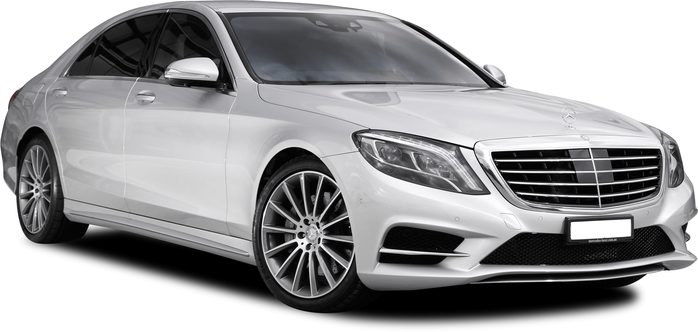

السلام عليكم ورحمه الله
يعتبر اللون الأحمر لوناً مشرقاً ودافئاً، حيث يعمل على إثارة مشاعر قوية لدى الشخص، وعادةً ما يتمّ ربطه مع الحب، والدفئ، والراحة، وفي المقابل يتمّ ربط اللون الأحمر مع الغضب والحدّة، كما يتمّ ربطه مع الانفعال والقوة، ويدلّ اللون الأحمر على العديد من المعاني الرمزية المختلفة، حيث يمكن أن تختلف ردود الفعل الفردية تجاه اللون الأحمر بشكلٍ كبير